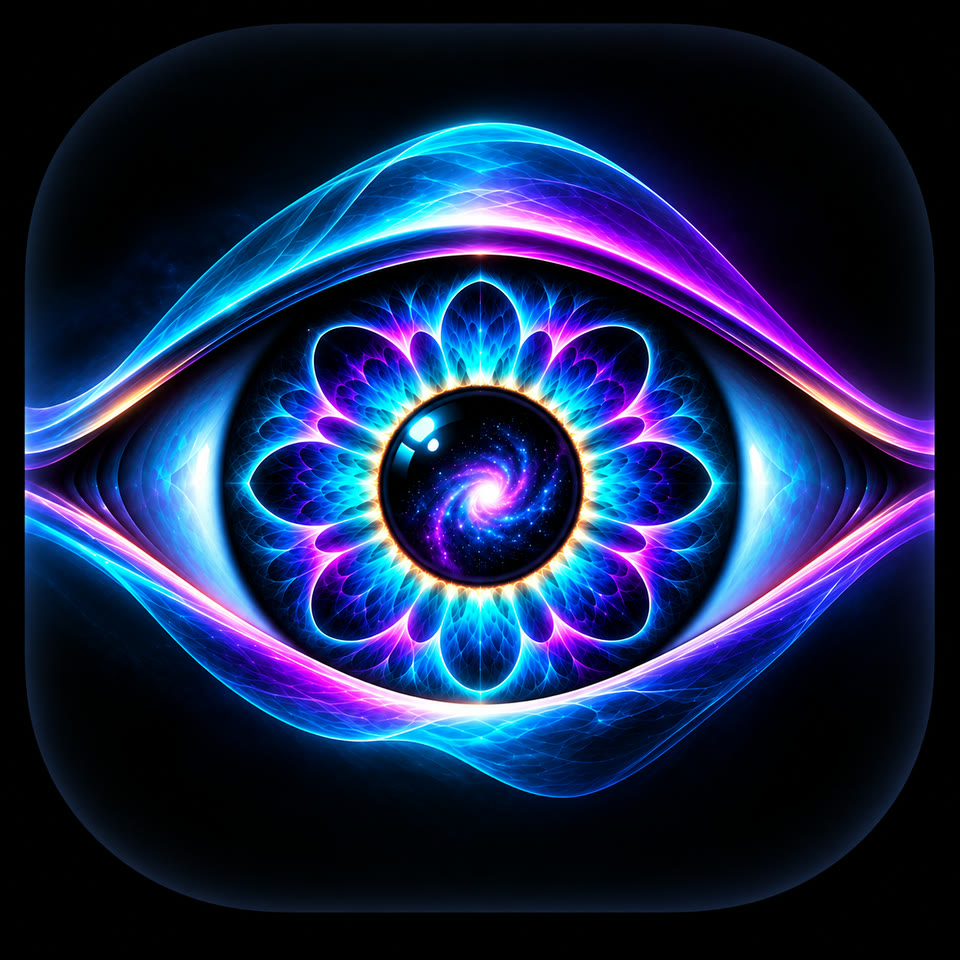
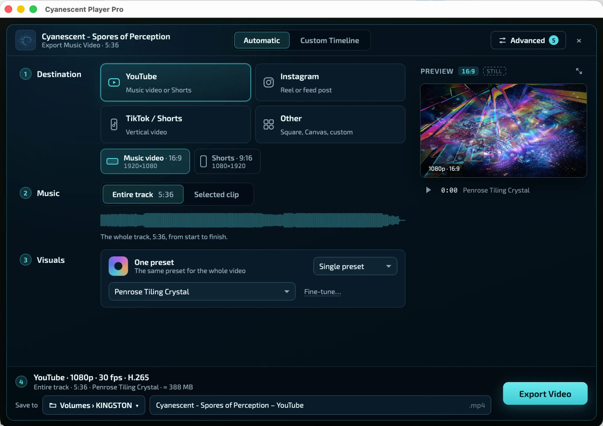
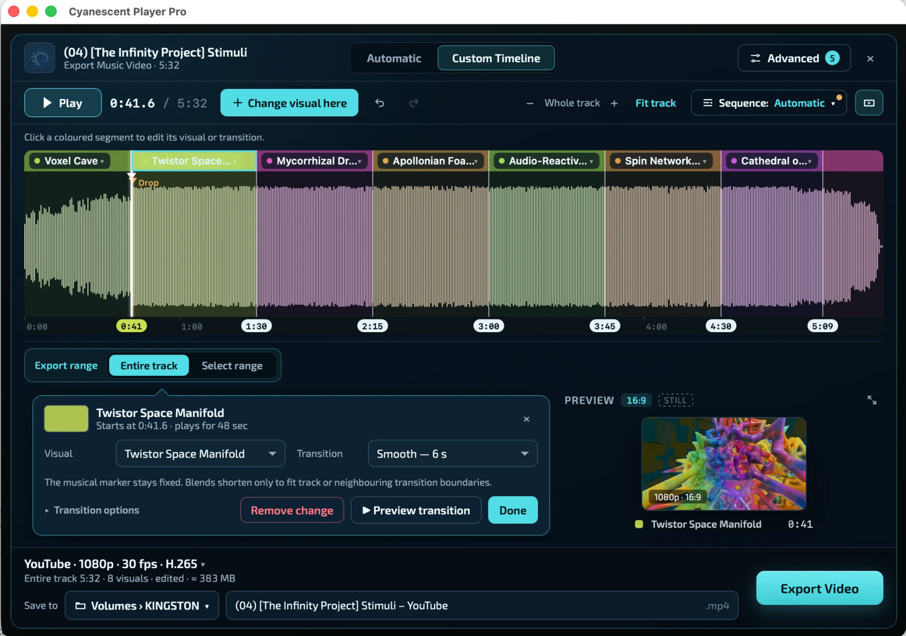
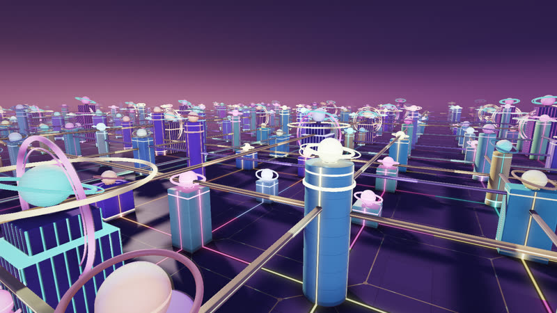
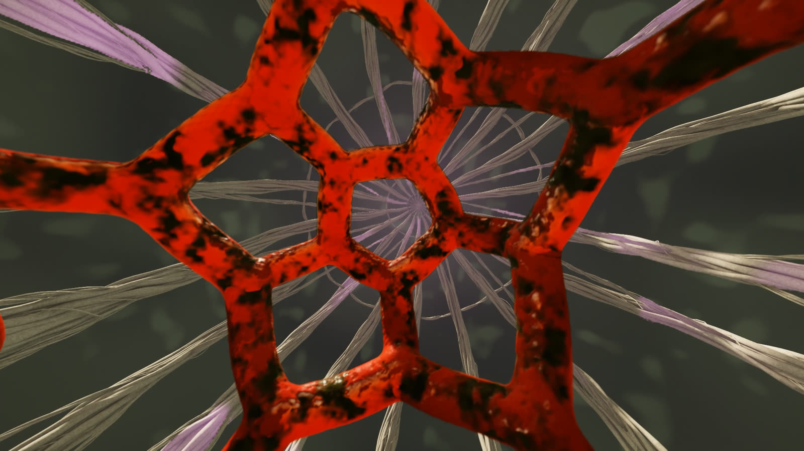
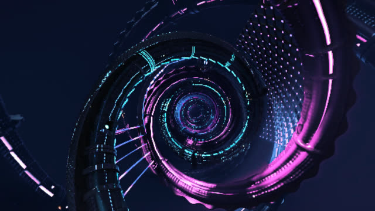
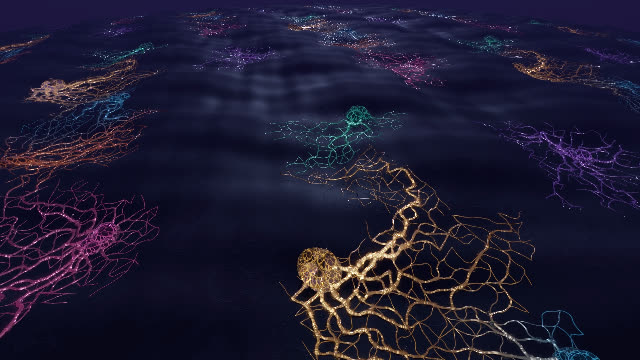

Listen
A music player first: bring your own library and let the visuals take over the room.
- Persistent music playlists, with shuffle and repeat
- Add tracks or whole folders from your Mac
- Fullscreen visualiser in its own window
Live visualiser · Music video creator · macOS
Living, psychedelic visual worlds that listen to every beat, build and drop. Play them live with your music, then turn any track into a finished music video, with no editing or animation skills needed.

The Cosmic Eye — Cyanescent Player’s icon
Made in Cyanescent Player Pro
Create spectacular, music-responsive visual journeys with Cyanescent Player. Choose your visuals, fine-tune transitions to musical moments, and export the finished video from an intuitive timeline.
Visual worlds
Fractal forests, glowing fungi, impossible geometry and neon cities: real-time GPU worlds that breathe, pulse and transform with the music.
Screenshots of Cyanescent Player 1.0 visuals. Free & Pro presets are included in both editions. Select an image to enlarge it.
Create music videos
Turn your music into a stunning, music-responsive video. Cyanescent Player follows the rhythm, energy and structure of your track, bringing it to life with evolving psychedelic visuals. No editing or animation skills needed.
Publish, perform, sell and monetise your finished videos worldwide, royalty-free and with no attribution required. You still need the rights to the music and any other material you use. See the licence.


The Adaptive engine
Before a track plays, Cyanescent analyses all of it: tempo, beats, phrases, frequency bands, energy and the drops still to come. Every preset then receives that understanding, frame by frame, so the visuals answer the music as it happens and anticipate what’s next.
The Player finds the tempo and a beat grid, then groups beats into bars and 8, 16 and 32-beat phrases. It measures low, mid and high frequencies, kick, brightness and density, and maps the song into energy sections.
Lookahead windows 0.5, 5 and 20 seconds ahead give a sense of what’s about to happen. A drop map finds each drop from five cues (low end returning, a fuller section, the kick coming back, a riser, the length of the break), telling real drops from short fills. It holds even after you seek.
Each frame, presets receive bands and kicks, beat and phrase position, energy now and ahead, and how far away the next drop is, along with the music’s current role. Each world interprets these in its own way. Adaptive mode lands preset changes on phrase boundaries.
Live input works too. With a microphone, an audio interface or System Audio, the Player tracks tempo and phrases on the fly and reacts to energy and structure as they arrive. Whole-track lookahead and the drop map are available when it plays tracks from your library.
Three ways to use it
A music player first: bring your own library and let the visuals take over the room.
Drive the visuals from whatever is playing in the room or on stage.

Export Studio renders a finished music video from your track, frame by frame. See how it works.
Editions
Every edition shares the same musical Adaptive engine, playlists, live input and Export Studio. Pro unlocks the full real-time collection and 4K export.
A curated taste of the collection
$0
The complete real-time collection
$5 $15Launch price $5 — regular price $15. One-time purchase.
Everything in Pro, plus cinematic video
$30One-time purchase.
Every edition, including Free, is the real thing, with nothing added.
| Feature | Free | Pro | Pro Video |
|---|---|---|---|
| Price | $0 | $5 launch price ($15 regular) | $30 |
| Music-responsive presets | 18 curated | 75 | 77 core; up to 83 with all six HD Worlds |
| Adaptive Synesthesia Engine | Yes | Yes | Yes |
| Music playlists | Yes | Yes | Yes |
| Live input and System Audio | Yes | Yes | Yes |
| Pocket Scion biofeedback | Yes | Yes | Yes |
| Rendered transitions real-time blends between presets, timed to the music | Yes | Yes | Yes |
| Export Studio Automatic and Custom Timeline | Yes | Yes | Yes |
| Cinematic video transitions library of 75 HD video clips (1080p/720p) played between presets | — | — | Yes |
| Your own clips as transitions import video clips into My Transitions | — | — | Yes |
| Alien Visits video interstitials | — | — | Yes |
| Optional HD Worlds | — | — | Six, free separate downloads |
| Video export maximum resolution of your finished video | 1080p | 4K | 4K |
| DRM-free, no activation or account | Yes | Yes | Yes |
| No watermarks, ads or tracking | Yes | Yes | Yes |
| Get it | Download Free | Get Pro — $5 | Get Pro Video — $30 |
Licensing
Pay once for Pro or Pro Video and it’s yours to use indefinitely. Install it, work offline, and keep everything you make.
The licence is individual, not shared or organisation-wide. Cyanescent Player Free is free of charge but proprietary; no edition is open-source. Export rights cover the bundled visuals in your finished works; you still need the rights to any music or other material you add, and the supplied presets, shaders and media can’t be extracted or resold as a standalone library. See the full licence agreement.

Red Cage Stinkhorn, an optional HD World, rendered in the Player.


Pro Video includes everything in Pro, then adds cinematic video: 77 core presets, an exclusive library of 75 HD video transitions, your own clips as personalised transitions, and Alien Visits video interstitials. Export Studio offers Automatic and Custom Timeline modes, with finished videos up to 4K.
Six optional HD Worlds are free separate downloads for Pro Video owners, from the HD Worlds download page. Each is a notarised disk image with its own installer: quit Pro Video, open the World’s disk image, launch its installer and select your Pro Video app if asked. No Terminal is needed. HD Worlds require Pro Video; they aren’t built into the application, and Free and Pro can’t use them. With all six installed, Pro Video plays up to 83 presets.
The transition clips are HD video (1080p and 720p). Your exported videos can still be up to 4K; the export resolution is set in Export Studio, not by the clips. HD World downloads range from about 0.41 GB to 2.53 GB each. See HD World installation.
Get started
All three editions are universal apps for macOS 12 or later, signed with a Developer ID and notarised by Apple, so they open normally without workarounds.
18 music-responsive presets, the Adaptive Synesthesia Engine and Export Studio up to 1080p. No purchase, account or activation.
Cyanescent-Player-free-1.0.0-build-2-d10b51c-macOS-universal-FINAL.zipSigned and notarised by Apple. Checksum file.
75 music-responsive presets, the Adaptive Synesthesia Engine, intelligent rendered transitions, Export Studio with Automatic and Custom Timeline modes, and video exports up to 4K. Pay once through Lemon Squeezy’s secure checkout, then download the app from your purchase. Your receipt email includes the download link. There’s nothing to activate.
Cyanescent-Player-pro-1.0.0-build-2-d10b51c-macOS-universal-FINAL.zipEverything in Pro, plus 77 core presets, 75 cinematic HD video transitions, your own clips as transitions, Alien Visits and six optional HD Worlds. Pay once through Lemon Squeezy, then download the app from your purchase.
Cyanescent-Player-pro-video-1.0.0-build-2-228e245-macOS-universal-FINAL.zipHD Worlds are free separate downloads from the HD Worlds download page.
Paid checkout, payment and receipts are handled by Lemon Squeezy, which acts as the seller of record. By buying you accept the licence agreement; see purchases and refunds.
All three editions are signed with a Developer ID and notarised by Apple, so there’s no need to change any security settings. If macOS ever says an app is damaged or can’t be checked, delete it and download it again from this site. Never disable Gatekeeper. Full instructions are in the Quick Start. Version 1.0.0 replaces the earlier 0.9 Preview and 0.9 Fungal Edition, which are no longer offered.
System requirements
Universal application for Apple Silicon and Intel Macs.
A GPU and driver capable of WebGL 2 in macOS WebKit. Start on Standard quality and increase it if playback stays smooth. There is no certified minimum GPU; complex worlds and 4K export can need much more time and memory.
Free exports up to 1080p. Pro and Pro Video export up to 4K.
Native System Audio capture needs macOS 14.2 or later. On earlier versions, use a separately configured external or loopback input (routing drivers aren’t included).
Biofeedback input from a compatible Pocket Scion / SCÍON USB-MIDI device, connected with a data-capable cable.
Free is a 7.7 MB download and Pro 20.4 MB. Pro Video is 1.97 GB, and its optional HD Worlds need their own space, from about 0.41 GB to 2.53 GB each.
Questions
No. No edition of Cyanescent Player adds watermarks to your exports or shows ads, and none includes analytics, tracking, spyware or bundled extras. Every download is signed with a Developer ID and notarised by Apple. Free is limited only in its preset collection (18 presets) and maximum export resolution (1080p).
No. Pro is a one-time purchase. You use your edition indefinitely, with no subscription, expiry or renewal.
As many as you personally own or use, for your own personal and professional work, including work for clients or an employer. It’s an individual licence, so it isn’t shared with other people or across an organisation.
No account, serial number, licence key or online activation. Once downloaded and installed, the Player works offline without contacting a licensing server.
Yes. You can publish, distribute, sell and monetise finished videos and performances made with Cyanescent Player, worldwide and permanently, royalty-free and without attribution. You still need the rights to any music or other material you add.
No. Free costs nothing, but every edition is proprietary software. The DRM-free licence is about how you use your copy, not about access to the source code.
Checkout is handled by Lemon Squeezy. Once payment completes you can download the Pro application straight away, and your receipt email contains the download link too. There is no licence key, account or activation.
Every edition has rendered transitions: the Player blends one live preset into the next in real time, timed to the music. Pro Video adds video transitions, a library of 75 cinematic HD video clips played between presets, and lets you import your own clips as transitions. Your finished exports can be up to 4K in Pro and Pro Video either way.
No. HD Worlds work with Pro Video only. They’re optional free downloads from the HD Worlds download page, each installed with its own installer.
Version 1.0.0 supersedes them, with substantially upgraded presets and many fixes, so the earlier previews are no longer offered. Cyanescent Player Free 1.0.0 is the recommended free download.
Yes. All editions intentionally share music playlist data on your Mac, so you can move between editions without rebuilding your library.
Also from Cyanescent
Separate apps with their own downloads. Neither is an edition of Cyanescent Player, and both are free.
A free MilkDrop player for macOS. Play MilkDrop-compatible presets to your music, or drive them live with the Pocket Scion biofeedback synth.
A free psytrance kick-and-bass plugin for building the driving low end of your tracks, in one universal macOS VST3.